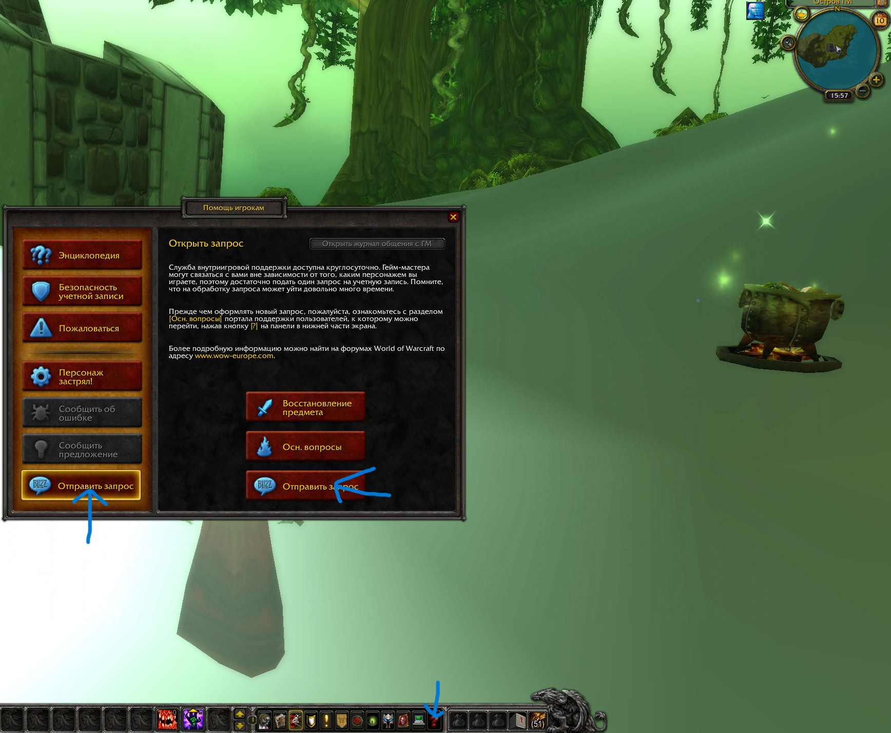

15.07.2025
Бета-тестирование и вакансии
Уважаемые игроки, сообщаем Вам что бета-тестирование начнётся очень скоро, потому что работа над сервером разрабатывается не останавливаясь!
Обо всех проблемах или проблемах с заданиями, мы прикрепим скриншот, как написать запрос GM (Game Master).
Также в скором времени у нас будут открыты вакансии: разработчиков, GM (Game Master), модераторов.
Спасибо за внимание и активное участие в развитии нашего проекта!
Подробнее